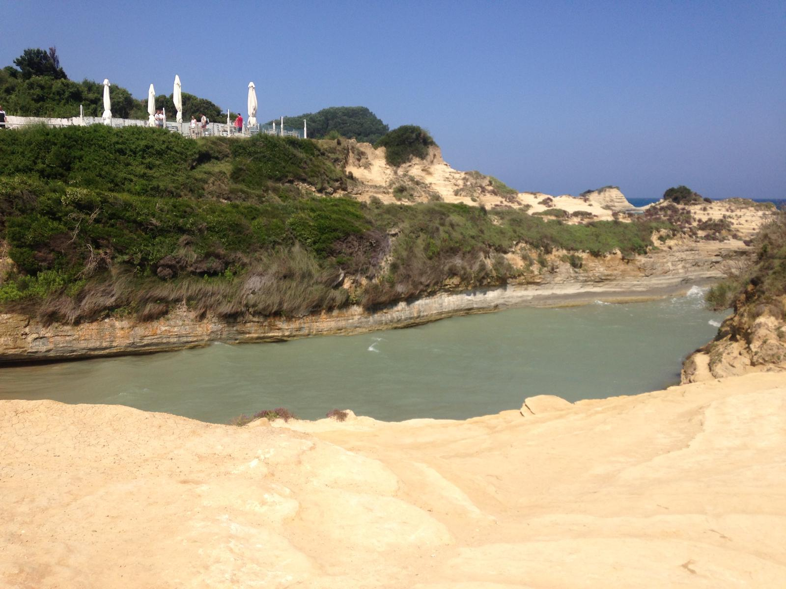
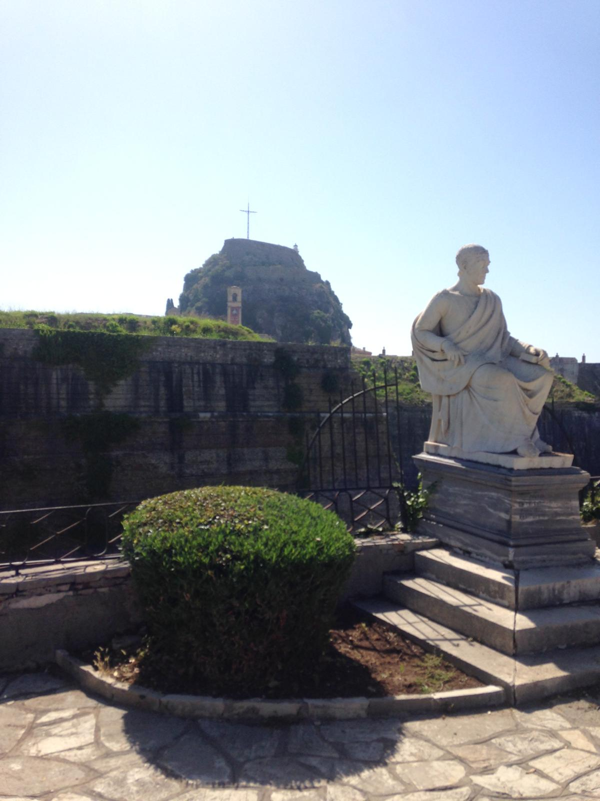
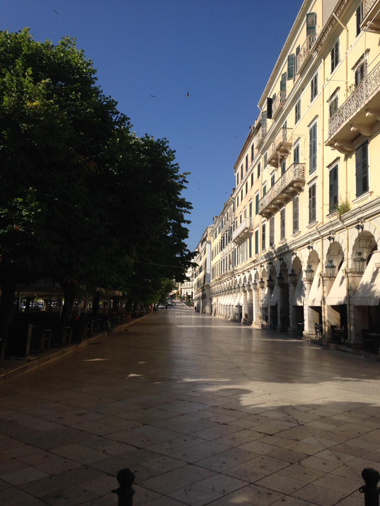
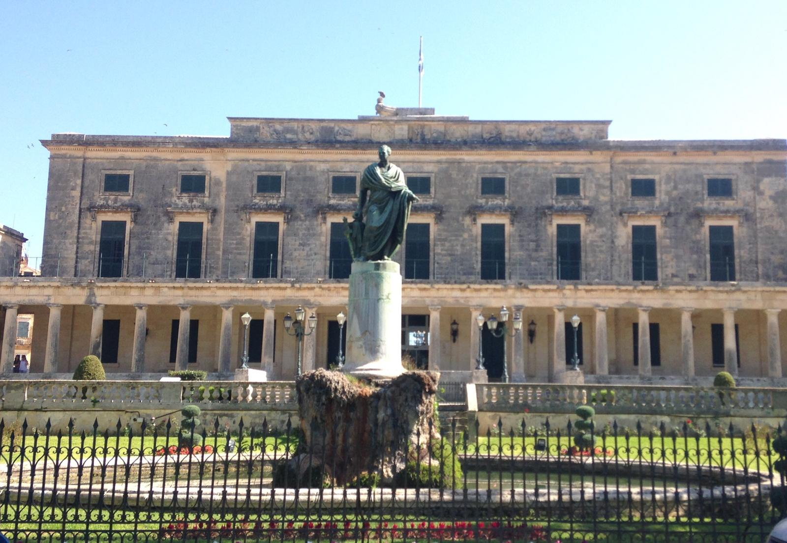
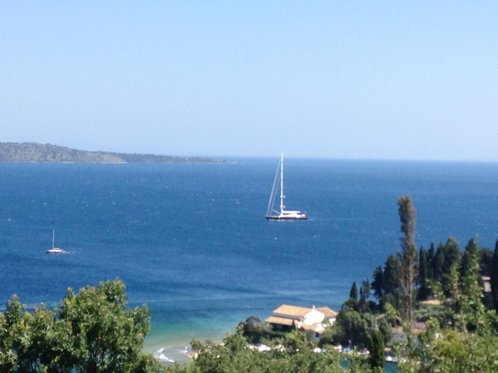
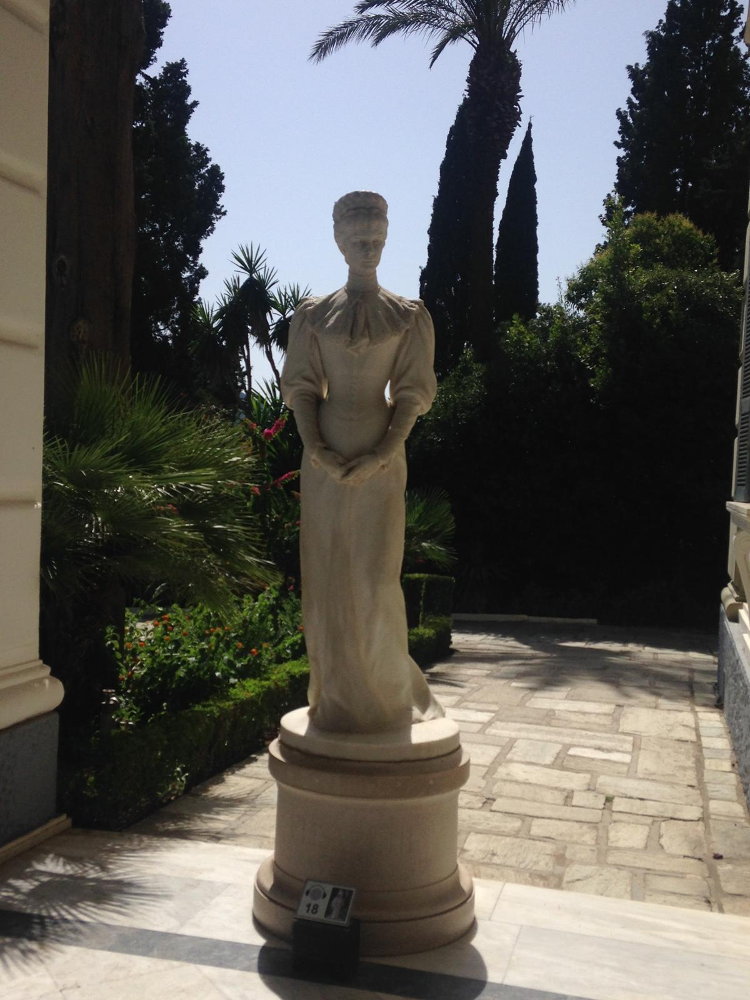
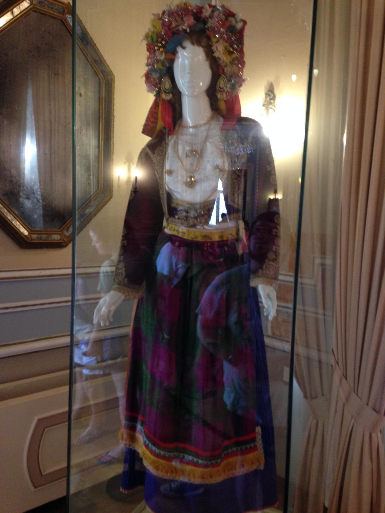
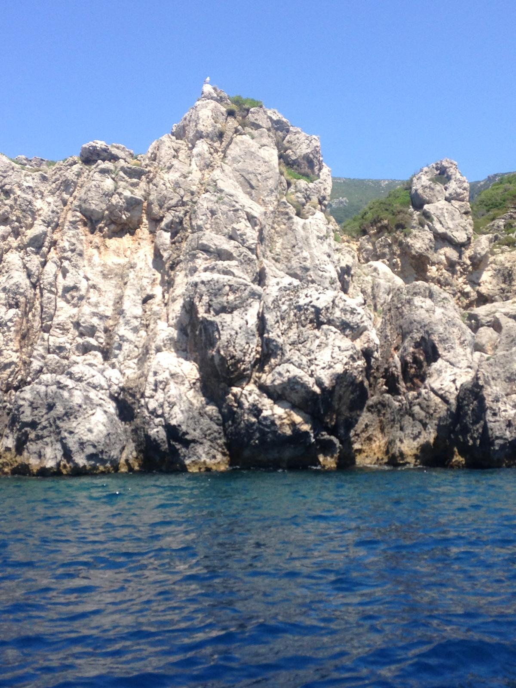
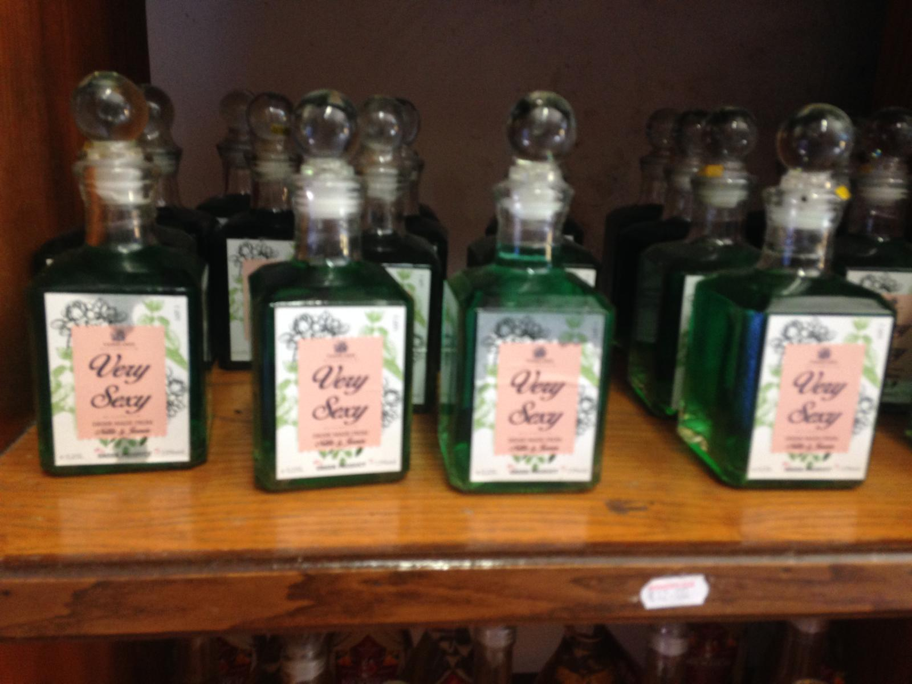
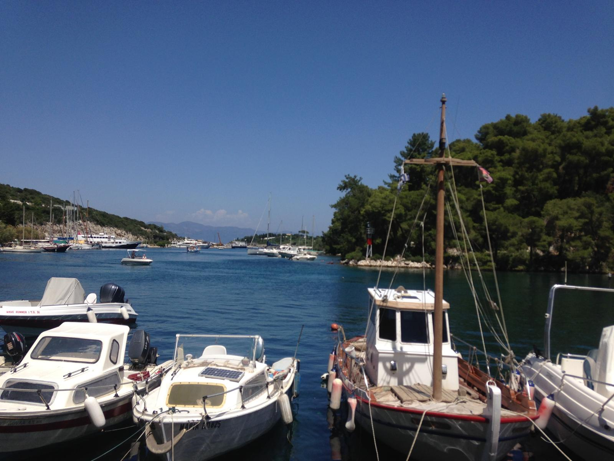

In 2018 Nicola headed to Corfu with friends for four nights — staying in the beautiful UNESCO-listed Corfu Town, doing a full eight-hour island day tour that took in Paleokastritsa Beach, the Achilleion Palace, the Lakones viewpoint and a string of gorgeous villages, and squeezing in a day trip to Albania for good measure. Corfu is a proper gem of an island — more character, more history and more beauty than most Greek islands manage, and with cats at every corner to keep things interesting.
Corfu sits at the top of the Ionian Sea, closer to Albania and Italy than to mainland Greece, and that geography gives it a distinctly different character to the Aegean islands. Centuries of Venetian rule left behind some of the most elegant and beautifully preserved architecture in the Mediterranean — the old town of Corfu is a UNESCO World Heritage Site for good reason.
The four nights were split between enjoying Corfu Town itself — the Campiello quarter with its impossibly narrow streets and tall Venetian buildings, the elegant Liston arcade, the two old fortresses, the harbour — and getting out to see the island on an eight-hour guided tour that covered more ground in a single day than most people manage in a week.
The hotel had a lovely little pool and cocktails on tap — which got a fair amount of use between the sightseeing. A good trip deserves a good pool. There were no arguments about that policy.
And then of course — the day trip across the water to Albania. But that is covered on its own page.
Corfu Town — Kerkyra in Greek — is simply one of the most beautiful towns in the Mediterranean. The UNESCO-listed old town is a maze of narrow Venetian alleyways, tall shuttered buildings in faded yellows and terracottas, hidden churches, tiny squares with olive trees and, at every single turn, cats. They are everywhere. Sunning themselves on steps, draped across doorways, padding along the top of walls with complete confidence that they own the place. They probably do.
The architecture is extraordinary — the Venetian influence is strong and unmistakable, giving Corfu Town a character more Italian than Greek in places. The Liston arcade along the Esplanade could have been transplanted from Paris. The two Venetian fortresses — the Old Fortress jutting out into the sea and the New Fortress above the harbour — dominate the skyline and are both worth exploring properly.
The town is genuinely lively too — not a tourist ghost town but a real working Corfu city that happens to look extraordinary. Restaurants and bars line the old town streets, the market is busy and the atmosphere after dark is brilliant.





One of the best decisions of the trip was booking an eight-hour guided bus tour of the island — it covered an enormous amount of ground and showed a side of Corfu that most visitors in the beach resorts never get to see. From the dramatic north coast to the lush interior, the Achilleion Palace to the Lakones viewpoint, it was one of those days where you lose count of how many times you say "wow".
Absolutely stunning — turquoise water, dramatic limestone cliffs rising from the sea, a series of beautiful coves nestled between the rocks. Paleokastritsa is consistently rated one of the most beautiful beaches in Greece and it completely earns that reputation. If going back to Corfu, this is where we would stay rather than in the town.
The mountain village of Lakones sits high above Paleokastritsa and offers one of the most spectacular viewpoints in Corfu — looking down over the turquoise coves and the clifftops below. The view from here is the one that goes on postcards. Worth every hairpin bend on the way up.
The Achilleion Palace was built in the 1890s by Empress Elisabeth of Austria — Sisi — as a personal retreat, and it is extraordinary. A stunning neoclassical building set in beautiful terraced gardens above the village of Gastouri, filled with statues of Achilles and Greek mythology, with views over the island and the Ionian Sea that take your breath away. They did the full guided tour inside and it was well worth it — the history of Sisi, of Kaiser Wilhelm II who later bought it, and of the island itself comes alive in there.
Kanoni is one of Corfu's most iconic spots — a narrow strip of land with the runway of Corfu Airport on one side and the lagoon on the other, with the tiny church of Vlacherna connected by a causeway and the islet of Pontikonisi (Mouse Island) beyond. One of the most photographed views in all of Greece.
The tour wound through a string of lovely Corfiot villages — Benitses on the east coast, the lush green interior, Gastouri below the palace — showing the quieter, more authentically Greek side of the island away from the tourist resorts.
Corfu has a strong connection to the Durrell family — Gerald Durrell spent his childhood here and wrote about it in My Family and Other Animals. The north of the island, around Kalami and the Durrell Park area, is particularly lush and beautiful — a reminder that Corfu is one of the greenest of the Greek islands.





Corfu Town is wonderful — genuinely one of the most elegant and characterful towns in the Mediterranean. But if beaches are a priority, the town itself is not the best base. The beaches in the immediate area are fine but nothing special. For serious beach time — turquoise water, dramatic scenery, proper swimming — Paleokastritsa is on a different level entirely.
The practical advice: stay in Paleokastritsa, do Corfu Town as a day trip. You get the best of both — the most stunning beach on the island on your doorstep and a day in the beautiful old town when you want culture and atmosphere. The reverse — four nights in the town with a day trip to the beach — works fine, but you end up wishing you had more time at the water.
Either way, do the island bus tour. Eight hours, enormous amount of ground covered, great value and shows you a Corfu that most visitors stuck in their resort never see. It was one of the best days of the trip.
From Corfu it is a short ferry crossing to Albania — one of the most surprising and underrated countries in Europe and a brilliant addition to any Corfu trip. The day trip from Corfu to Sarandë and Butrint is covered in full on its own page.
Greece is actually one of the more manageable European destinations for gluten-free travellers — not because restaurants in 2018 were specifically labelling things, but because Greek cuisine is built around naturally gluten-free ingredients. Grilled meats and fish, Greek salads, tzatziki, hummus, dolmades, rice dishes, fresh vegetables cooked in olive oil — the vast majority of traditional Greek food is naturally gluten-free.
The things to watch are pitta bread served with dips, spanakopita (filo pastry), and any dishes that might use flour as a thickener. But in general, eating in Greece as a coeliac is far less stressful than in many other countries. Ask about ingredients, stick to the grilled dishes and mezze, and you will eat very well indeed.
Corfu island tours, Paleokastritsa boat trips, Achilleion Palace visits, Old Town walking tours, Albania day trips and more:
Disclosure: If you book through these links we may earn a small commission at no extra cost to you.
Common questions
What to pack for Corfu
Corfu is warm from May through October — pack light, pack for the beach and don't forget to protect yourself from the sun.
Essential — the Greek sun is strong, especially if you're spending time at Paleokastritsa on the water.
View on Amazon →Corfu Town's narrow cobbled streets and the island tour demand good footwear — sandals won't cut it for a full day out.
View on Amazon →Stay connected across the island without roaming charges — useful for maps and navigation on the day tour.
View on Amazon →Eight hours on an island tour takes a toll on your phone battery — keep a power bank charged for photos.
View on Amazon →For the island tour especially — hours on a bus and walking around the Achilleion Palace gardens in full Greek sunshine.
View on Amazon →Greece uses Type C and F plugs — different to Ireland. Don't get caught out on day one.
View on Amazon →Disclosure: These are Amazon affiliate links. If you buy through them we may earn a small commission at no extra cost to you.
Book the island bus tour — it is absolutely the best way to see Corfu properly. Do Paleokastritsa, do the Achilleion Palace, walk the old town of Corfu after dark. And make friends with the cats.
Affiliate disclosure: if you book through our links we may earn a small commission at no cost to you.